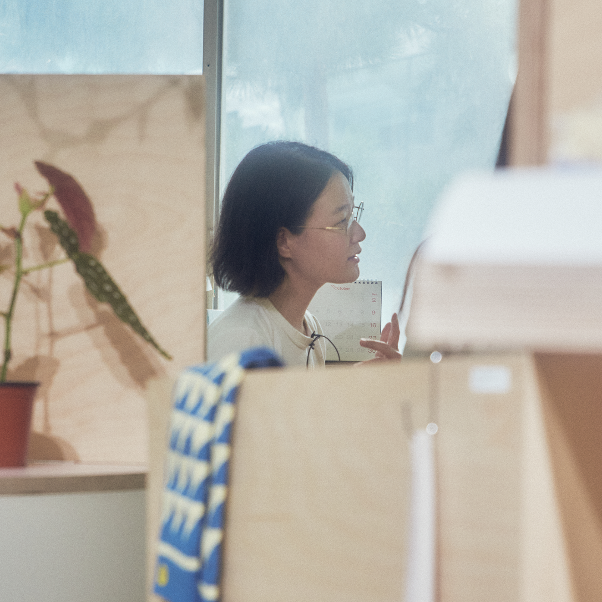
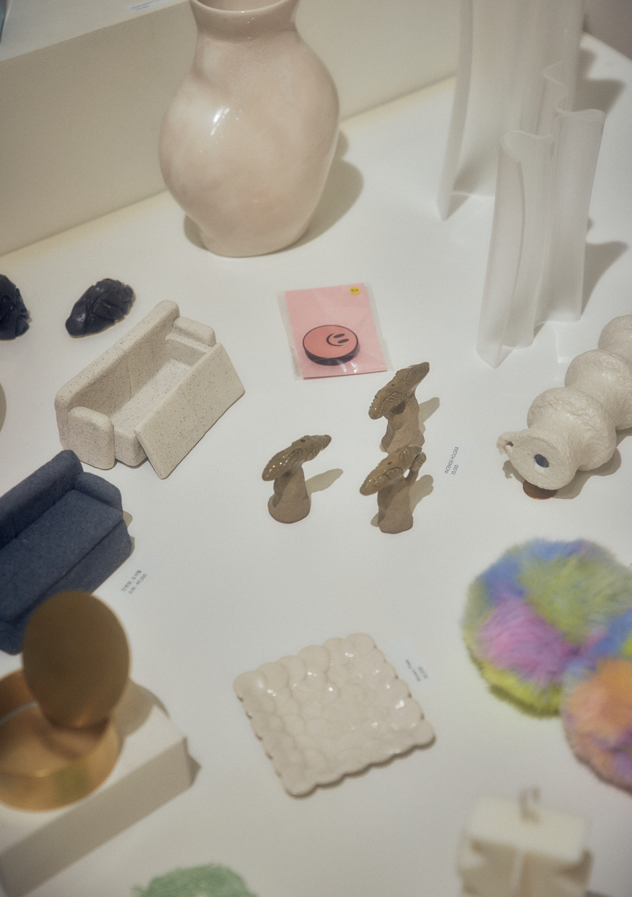
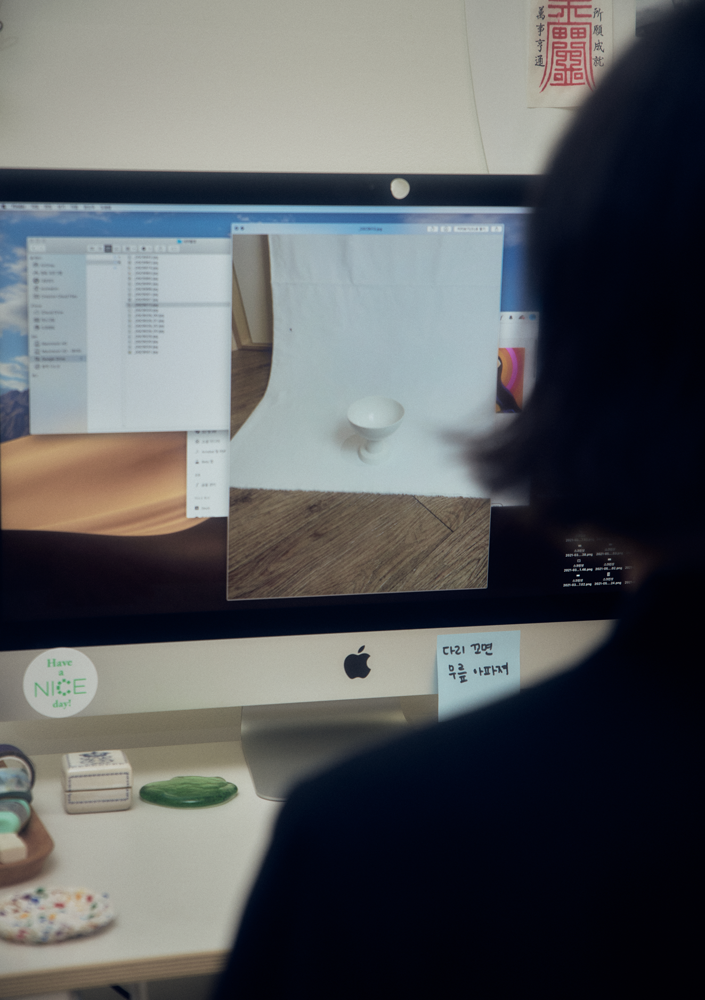
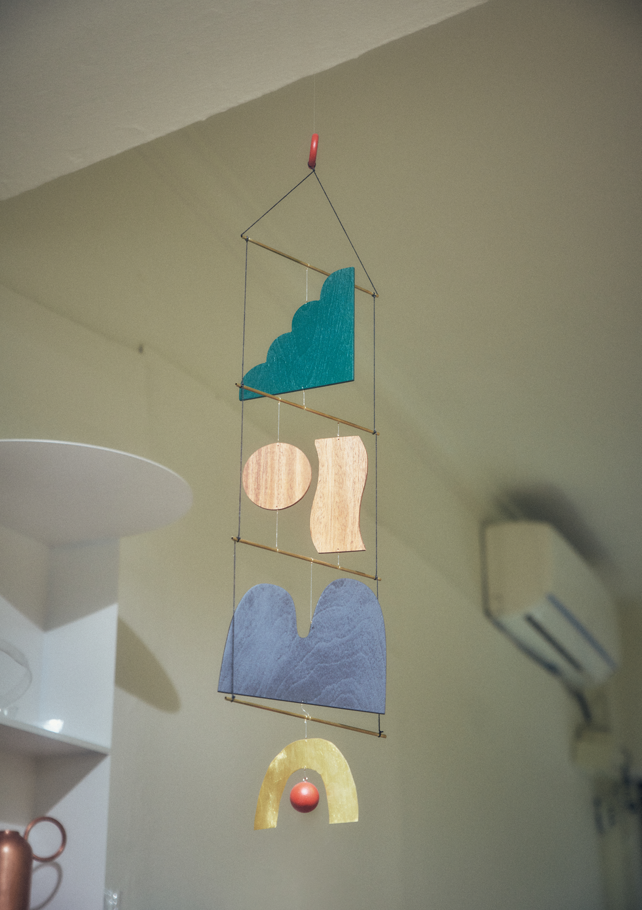
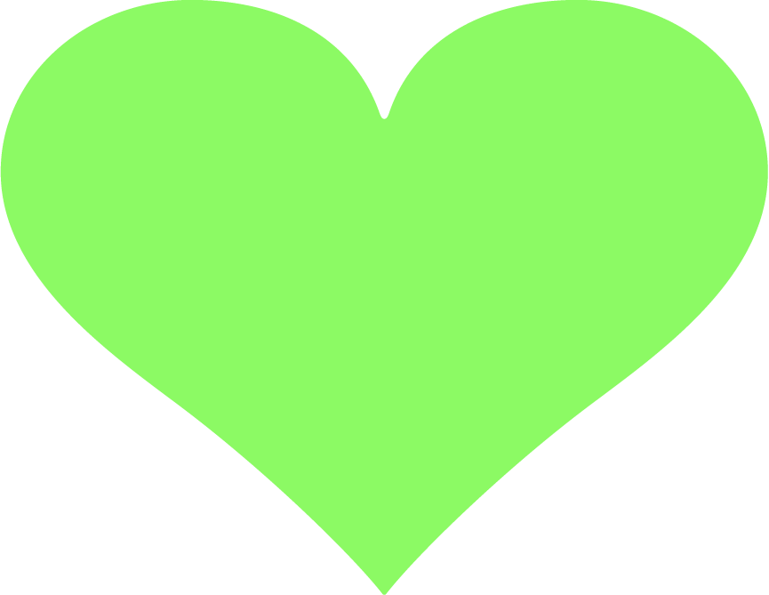

“여성 본인이 아름다워질 필요는 없어요.
주위의 아름다움을 발견할 수 있는 사람이
아름다운 사회를 만들어 나가는 거죠.”

01
나이스숍의 시작
02
여성들이 사라지지 않도록
03
더 나은 선택, 더 나은 삶
은하는 나이스프레스의 그래픽 디자이너이자 라이프스타일 매장 나이스숍의 운영하고 있다. 여성 창작자의 언어를 싣는 잡지 SPREAD를 발행하고 매장에서는 여성 창작자의 제품을 판매한다.
남과 다른 선택을 내리는 것에서 드러나는 것이 취향이라면, 신중하게 고심한 선택에서는 그 사람의 신념을 보기도 한다. 아름다운 삶과 타인을 위해 아름답기를 거부하는 삶, 이 둘은 화해할 수 있을까. 나이스한 사람과 나이스한 선택으로 시작한 공간 나이스숍에서 은하를 만났다.
나이스숍의 시작
브랜드명이 나이스숍이잖아요. ‘나이스’가 어떤 의미인가요?
제가 어렸을 때 나이스한 사람이 되고 싶다는 막연한 생각을 한 적이 있어요. 친구들한테 그 이야기를 하니까 친구들이 “너 나이스한데? 너 나이스해.”하면서 애칭처럼 ‘나이스 킴’이라고 불러줬었어요. 그래픽 스튜디오 이름을 지을 때 당시 한창 ‘프레스’이름을 가진 스튜디오들이 많아서 나이스프레스라고 지었고 숍 이름을 지을때는 나이스프레스와 다르게 독립적으로 지으려고 많이 생각했었는데 딱히 좋은 이름이 떠오르지 않더라고요. 계속 미루다가는 아무것도 못하겠다 싶어서 그냥 나이스숍으로 정했어요.
나이스 숍을 운영하시게 된 배경이 궁금해요.
제 주변에 원체 좋은 여성 창작자 친구들이 많았어요. 친구들도 소개하고 친구들의 작업도 선보일 수 있고 판매도 하는 그런 공간이 됐으면 좋겠다고 생각해서 시작하게 된 거였어요. 그리고 초기에는 저를 홍보할 수 있는 수단으로도 생각했었어요. 이 브랜드를 만들고 꾸려나감으로써 스스로를 브랜딩을 해나가는 거잖아요. 포트폴리오가 하나 생기는 거니까. 그걸 가지고 다른 일을 외부에서도 할 수 있지 않을까 이런 생각도 했었던 것 같고. 근데 저 스스로를 홍보하는 게 쉽지 않더라고요. 저를 드러내고 자꾸 쇼잉하고 막 어필하는 게 너무 어려운 거예요. 그냥 있는 그대로만 말해도 되는데 잘 풀어내지 못했었어요. 그래서 되게 혼란을 많이 겪었어요.
근데 나이스숍 일은 장사잖아요. 돈이 오가는 문제라 정신이 바짝 들더라고요. 이 일을 하면서 일에 대한 개념을 아예 처음부터 다시 세웠어요. 일을 접근하는 태도, 일을 하는 저에 대한 태도, 그리고 같이 일을 하는 사람에 대한 태도도 바뀌었어요. 사실 나이스숍이 돈이 많이 되고 안 되고 이런 걸 떠나서 개인적으로 저의 성장에 있어서 엄청 의미가 커요.
인스타그램에 소개글로 적혀있는 ‘더 나은 선택’이라는 말도 나이스와 관련이 있을까요?
브랜딩 차원에서 나중에 만들어진 문장이지만 관련이 있기는 해요. 나이스라고 하면 유쾌하고 청량한 느낌이 있잖아요. 쿨하고 좋은 이미지 그 자체였으면 좋겠다 싶었어요. 입점 상품을 개인적인 취향으로 셀렉하지만 그런 의미들이 많이 반영이 됐으면 좋겠기도 했고.


여성들이
사라지지 않도록
나이스숍은 “여성이 만든 제품을 큐레이션 합니다”라고 인스타에 소개되어 있죠.
네, 여성 창작자들이 만든 제품을 소개하는 것을 기본 원칙으로 하고 퀄리티나 작업의 지속 가능성 등을 주요하게 보고 있어요. 운영 초창기에는 무언가를 쌓아 나가기 시작하는 분들을 제가 발견해서 제품을 들여오기도 했어요. 그런데 고객의 컴플레인을 받고 본인의 작업에 자신 없어져서 자연스럽게 작업을 놓는 분들이 계시더라고요. 혼자 하는 여성 작업자들 중에 진짜 잘하는 분들이 있는데 연락이 뚝뚝 끊기는 경우가 있어요. 근데 저는 그게 개인의 멘탈 이슈는 아닌 것 같아요. 한국에서 여성으로 태어나서 자라면서 얻기 쉬운 질병 같은 것들이 있잖아요. 물론 아예 없는 분들도 있어요. 차별 느끼지 못하고 자신감도 있고 엄청 커리어에 대한 자부심도 있고 그래서 쭉쭉 잘나가요. 작업이 좋다면요. 반면에 주춤하시는 분들은 제가 거래처로서 최대한 힘을 얻을 수 있는 멘트들을 할 수는 있지만 어떻게 받아들이느냐는 그분들 몫이니까 아무래도 한계가 있죠.
나이스숍을 브랜딩 하는 과정에서 본인을 드러내는 게 어려웠다고 말씀하셨잖아요. 그것 또한 여성이라는 위치와 연결되는 지점이 있었을까요?
그렇죠. 저도 사라지기 싫어서 이걸 연 거니까요.
은하 님은 숍 운영자인 동시에 창작자이기도 하시잖아요. 디자이너로서 활동할 때와 나이스숍을 통해 창작자들을 소개하면서 달라진 점이 있나요?
네, 여성 창작자들이 만든 제품을 소개하는 것을 기본 원칙으로 하고 퀄리티나 작업의 지속 가능성 등을 주요하게 보고 있어요. 운영 초창기에는 무언가를 쌓아 나가기 시작하는 분들을 제가 발견해서 제품을 들여오기도 했어요. 그런데 고객의 컴플레인을 받고 본인의 작업에 자신 없어져서 자연스럽게 작업을 놓는 분들이 계시더라고요. 혼자 하는 여성 작업자들 중에 진짜 잘하는 분들이 있는데 연락이 뚝뚝 끊기는 경우가 있어요. 근데 저는 그게 개인의 멘탈 이슈는 아닌 것 같아요. 한국에서 여성으로 태어나서 자라면서 얻기 쉬운 질병 같은 것들이 있잖아요. 물론 아예 없는 분들도 있어요. 차별 느끼지 못하고 자신감도 있고 엄청 커리어에 대한 자부심도 있고 그래서 쭉쭉 잘나가요. 작업이 좋다면요. 반면에 주춤하시는 분들은 제가 거래처로서 최대한 힘을 얻을 수 있는 멘트들을 할 수는 있지만 어떻게 받아들이느냐는 그분들 몫이니까 아무래도 한계가 있죠.

더 나은 선택,
더 나은 삶
라이프 스타일 편집숍이잖아요. 제품의 범주가 정해져 있나요?
그게 없어요. 다른 셀렉트숍 보면서 되게 스트레스 받는 점이 있는데 규모가 커지면 다 가구나 인테리어로 가고 규모가 작으면 주방으로 가요. 저는 그게 너무 싫더라고요.
왜 싫어요?
나이스숍 손님도 여자가 거의 대부분이에요. 8 대 2 정도 되는 것 같아요. 나이대는 2-30대가 많고. 그래서 물건을 들일 때 초반에는 ‘그냥 예쁘고 아름다운 물건이 얼마나 의미가 있지? 어떤 가치가 있나?’, ‘이런 것들을 제안하는 것도 여자들에게 아무튼 예쁘게 살라고 강요하는 건가?’ 이런 고민도 많이 했었어요. 그래서 물건을 고르는데 신중을 기하자고 생각하고 있어요. 조금 더 예민하게 물건들을 들여야겠다.
상품 셀렉에 있어 예민함은 무엇인가요?
제품의 완성도도 중요하지만 결국은 저의 경험치인 것 같아요. 시간과 여유가 없으면 ‘이것도 괜찮은데 저것도 괜찮은데’ 하면서 막 마음이 흔들리고 다 괜찮아 보여요. 초반에는 제 타입이 아니어도 ‘누군가는 좋아하지 않을까?’하면서 가져오기도 하고 그랬어요. 그런데 정말 좋은 작업을 만나면 ‘이런 애들만 와야 되는데…’ 이런 생각을 하죠.높은 기준점을 유지하려면 결국 계속 비교하면서 더 나은 걸 찾아야 하니까 시간이 많이 들어요. 만약에 당장 문을 열어야 되는데 매장이 텅텅 비어 있으면 안 되잖아요. 쫓겨서 여유가 없어지면 기준점이 흔들리는 거죠. 그런 상황을 최대한 만들지 않아야 나이스숍을 알고 여기에 있는 여성 창작자들의 제품을 사려는 분들에게도 면이 서죠.

최근에 여성들이 미학적인 영역, 예를 들어 소품 등에 돈을 쓰기보다는, 자기 개발이나 주식과 같은 영역에 돈을 더 투자해야 한다는 이야기들이 있었잖아요. 앞서 말씀하신 고민 연장 선에서 이런 부분도 고민되셨을 것 같아요.
제품의 완성도도 중요하지만 결국은 저의 경험치인 것 같아요. 시간과 여유가 없으면 ‘이것도 괜찮은데 저것도 괜찮은데’ 하면서 막 마음이 흔들리고 다 괜찮아 보여요. 초반에는 제 타입이 아니어도 ‘누군가는 좋아하지 않을까?’하면서 가져오기도 하고 그랬어요. 그런데 정말 좋은 작업을 만나면 ‘이런 애들만 와야 되는데…’ 이런 생각을 하죠.높은 기준점을 유지하려면 결국 계속 비교하면서 더 나은 걸 찾아야 하니까 시간이 많이 들어요. 만약에 당장 문을 열어야 되는데 매장이 텅텅 비어 있으면 안 되잖아요. 쫓겨서 여유가 없어지면 기준점이 흔들리는 거죠. 그런 상황을 최대한 만들지 않아야 나이스숍을 알고 여기에 있는 여성 창작자들의 제품을 사려는 분들에게도 면이 서죠.